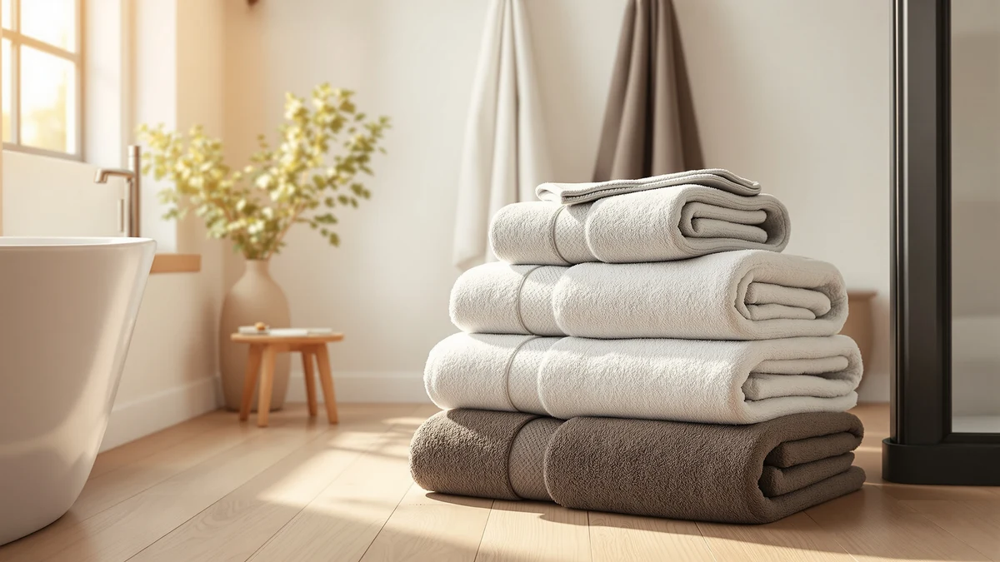

Utopia Towels Bath Towels Review (2026): Worth It?
Prices and picks verified as of November 2026. Independent, reader-supported reviews.


Quick Answer
This Utopia Towels Bath Towels review finds the Utopia Towels 6-Pack Bath the strongest pick if you want six matching cotton bath towels rather than a smaller four-piece set. At $39.99 it costs the same as White Classic's Luxury Bath Towel listing and the same as Utopia Towels' own pricier Premium four-pack, but it delivers more towels for that money than either one.
Our pick: Utopia Towels 6 Pack Bath, $39.99 Check Price on Amazon
Bottom line: our top pick is the Utopia Towels 6 Pack Bath Towels at $39.99.
Things to Know Before You Buy
- All four products in this Utopia Towels Bath Towels review list 100% cotton construction, though the Utopia Towels 6-Pack is the only listing that states this alongside a specific piece count.
- The Utopia Towels 6-Pack bundles six full bath towels for $39.99, while the brand's own four-piece Premium sets cost $37.99 and $39.99 as two separate Amazon listings.
- White Classic's Luxury Bath Towel matches the 6-Pack's $39.99 price, but its listing name does not specify a piece count the way the Utopia Towels products do.
- Two of the four products compared share the identical name "Utopia Towels 4 Pack Premium," so check the listing price and product link carefully before buying either one.
- None of the four products carry a published star rating or review count in the data we compared, so this review relies on listed specs and pricing rather than an aggregate rating.
This Utopia Towels Bath Towels review compares the brand's $39.99 six-piece cotton set against a competing listing from White Classic and two separate four-piece Premium sets that Utopia Towels sells under its own name. All four products sit within two dollars of each other, between $37.99 and $39.99, which puts the decision on piece count and material rather than price. Utopia Towels ships two distinct Premium four-packs as separate Amazon listings, a detail worth noting before you add either one to your cart. We compare what each listing actually states, cotton type, piece count, and price, instead of repeating the marketing language on the product pages.
Shoppers researching a Utopia Towels Bath Towels review usually want to know whether six matching towels beat two smaller four-piece sets from the same brand, or whether White Classic's single listing is worth the same money. The 6-Pack is the only one of the four products built around six full bath towels rather than a four-piece count, and that structural difference drives most of the comparisons in this review. None of the four listings publish a star rating or review count in the data we compared, so pricing and piece count carry more weight here than they would in a review with aggregate ratings available.
Why You Should Trust Us
We built this Utopia Towels Bath Towels review by comparing the pricing, material claims, and piece counts listed for each product rather than relying on marketing copy. Ilane Tall covers bathroom textiles for Best Bath Towels and focuses on how cotton construction and set composition compare across brands at a similar price point. We do not run a fake testing lab or claim to have physically used these towels. Every comparison here comes from the specifications and pricing published for each listing.
This review draws only on information published for each ASIN: product name, listed material, piece count, and price. We did not receive these towels from any brand, and we do not claim hands-on experience with them in this Utopia Towels Bath Towels review. Where a listing leaves out a detail, such as a star rating or a precise weight, we say so rather than filling the gap with an estimate.
Our Research Experience
Rather than run these towels through a physical trial, we researched how the Utopia Towels Bath Towels lineup compares against the alternatives buyers weigh at this price. For a Utopia Towels Bath Towels review like this one, that means checking cotton type, piece count, and price against White Classic's competing listing instead of assuming a bigger pack automatically wins. Piece count and price tell you more than a single spec on its own, and that comparison is what this review weighs across all four listings.
That approach means we treat the Utopia Towels 6-Pack's six-towel count against its $39.99 price as the central comparison, then check it against the per-towel math of the two Premium four-packs and the single White Classic listing. A bigger pack is not automatically the better deal if the material specs fall short, so we cross-check cotton type and price together instead of ranking by piece count alone.
Overview & Specs

Utopia Towels 6 Pack Bath
What we like
- 100% cotton construction across all six towels
- Six full bath towels cost the same as White Classic's single listing
- Matching set simplifies stocking a guest bathroom or rental property
Flaws but not dealbreakers
- No published star rating or review count to check consistency against
- Listing does not specify a GSM weight, so density is less clear than sets that publish one
| Material | 100% cotton |
| Size | 6 Bath Towels |
The Utopia Towels 6-Pack Bath is the top pick in this Utopia Towels Bath Towels review because it has the highest piece count of the four products compared: six full bath towels for $39.99. That price matches what White Classic charges for its Luxury Bath Towel listing, but Utopia Towels delivers six pieces instead of one listed item. That makes it the stronger pick by volume alone. The material is listed simply as 100% cotton, without the GSM or thread-count detail that some competing brands publish on their own listings.
Against the brand's own four-piece Premium sets at $37.99 and $39.99, the 6-Pack has two more towels for the same money or less. If you need a complete bathroom restock rather than a top-up, that piece count difference matters more than any marginal spec gap between the two Premium listings. Buyers who already own hand towels and washcloths and need only more bath towels get the most direct value from this six-piece option within the Utopia Towels Bath Towels lineup.
What We Liked
The clearest strength in this Utopia Towels Bath Towels review is piece count relative to price. Six full bath towels for $39.99 beats the per-towel cost of both four-piece Premium sets from the same brand, and it matches the price of White Classic's single Luxury Bath Towel listing while delivering far more product for the same spend.
All six towels share the same 100% cotton construction, so buyers get a uniform match across every towel in the set rather than mixing pieces from different purchases. That consistency matters for guest bathrooms and rental properties where towels need to look and feel the same.
The alternatives hold their own in other ways. White Classic markets its Luxury Bath Towel as a premium line at the same price point, and the two Utopia Towels Premium four-packs split the difference between $37.99 and $39.99 for buyers who want fewer pieces at a smaller upfront commitment.
What Could Be Better
The main gap in this Utopia Towels Bath Towels review is missing spec detail. The 6-Pack listing does not publish a GSM weight or thread count, so buyers cannot compare density directly against competing brands that do list those numbers.
None of the four products compared here carry a published star rating or review count, so this review leans on listed pricing and piece count rather than feedback from other owners. That gap applies equally to the Utopia Towels Premium four-packs and the White Classic alternative.
The two Premium four-packs also do not specify a GSM weight, so you cannot weigh their density against the 6-Pack or against White Classic using a shared number. That leaves price and piece count as the most reliable way to compare all four listings in this Utopia Towels Bath Towels review.
The shared product name between the two Premium four-packs is its own small drawback. Without a clear naming distinction between the $37.99 and $39.99 listings, a buyer scanning search results could easily click the wrong one. Double-check the price shown on the listing page before you buy, since the title alone will not tell the two apart.
Who Is It For?
This Utopia Towels Bath Towels review points to one clear buyer: someone who wants six matching cotton bath towels in a single purchase rather than a smaller set. Rental properties, guest bathrooms, and households that go through towels quickly fit that profile well.
If a four-piece set covers your household better, the two Utopia Towels Premium listings at $37.99 and $39.99 give you fewer towels at a lower total cost, worth checking if six towels is more than you need right now.
Buyers drawn to the White Classic name should compare its $39.99 Luxury Bath Towel listing directly against the Utopia Towels 6-Pack at the same price, since the Utopia option includes more pieces for the same spend.
Anyone comparing the two Utopia Towels Premium four-packs against each other should check the price difference first, since both listings share the same name and the same cotton construction. The $37.99 listing costs less for an identical piece count, so the two-dollar gap is the clearest reason to pick one over the other in this Utopia Towels Bath Towels review.
Alternatives to Consider
If six bath towels is more than your household needs, this Utopia Towels Bath Towels review also covers three smaller alternatives, including two four-piece Premium sets from Utopia Towels and one listing from White Classic, all priced at $39.99 or less.

Editor's Pick
White Classic Luxury Bath Towel
White Classic's Luxury Bath Towel matches the Utopia Towels 6-Pack on price at $39.99, a straightforward alternative if you prefer the White Classic name over Utopia Towels.
$39.99
Check Price on Amazon
Best Value
Utopia Towels 4 Pack Premium
The lower-priced of the two Utopia Towels Premium four-packs, this $37.99 listing costs less than the 6-Pack while keeping the same 100% cotton construction.
$37.99
Check Price on Amazon
Premium Choice
Utopia Towels 4 Pack Premium
A separate four-piece Premium listing from Utopia Towels priced at $39.99, matching the 6-Pack's price but with two fewer towels.
$39.99
Check Price on AmazonIs the Utopia Towels 6-Pack actually 100% cotton?
Yes.
How does the price compare to the alternatives?
At $39.99, the Utopia Towels 6-Pack costs the same as White Classic's Luxury Bath Towel listing, but it includes six towels instead of one listed item.
Frequently Asked Questions
Is the Utopia Towels 6-Pack actually 100% cotton?
How does the price compare to the alternatives?
What is the difference between the two Utopia Towels Premium four-packs?
Final Verdict
This Utopia Towels Bath Towels review comes down to piece count more than any other factor. The Utopia Towels 6-Pack delivers six matching cotton towels for $39.99, the same price White Classic charges for its single Luxury Bath Towel listing and the same ceiling as Utopia Towels' own pricier Premium four-pack. For buyers who want the most bath towels per dollar, Utopia Towels remains the stronger pick among the four options compared here.
Choose one of the two Premium four-packs instead if six towels is more than your household needs, or choose White Classic if you prefer that brand at the same $39.99 price. But for straightforward bath towel coverage, the Utopia Towels 6-Pack is the set this review recommends buying.